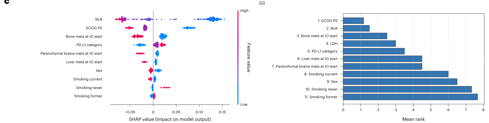

SHAP：讓 AI 說出理由
白話解釋
- 想像一個小組完成報告，要分功勞。SHAP 的做法是讓每個組員輪流「加入」或「退出」，看成績差多少，再平均，算出每個人的貢獻。
- 放到 AI 上，「組員」就是輸入的因素（年齡、抽血值、有沒有轉移…），「成績」是 AI 的預測。SHAP 告訴你每個因素把這次預測往上推還是往下拉、推了多少。
- 全域解釋：整體來說哪些因素最重要。個案解釋：這一位病人的預測是怎麼來的。
- 重要提醒：SHAP 說的是「這個模型怎麼算」，不是「這個因素在人體裡真的造成什麼」。因素之間彼此相關時，功勞也可能被分散或分錯。
在這篇論文怎麼用
- 作者用 SHAP 畫出全域重要性，以及每位病人的個案解釋圖 prelaj2026 p.17。
- 最強的負面因素：ECOG 大於 0、骨轉移、肝轉移、腦轉移；NLR 與 LDH 也重要 prelaj2026 p.6。這些與醫師原本知道的預後因素一致。
- 個案解釋圖後來直接拿給醫師在可用性研究中使用 prelaj2026 p.6。

相關頁面
自動化偏誤、醫師變準了，是 AI 的功勞嗎？可用性研究的設計限制、公平性（fairness）、AI 能不能幫醫師判斷誰適合免疫治療？I3LUNG 研究